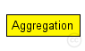
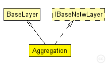

This documentation is released under the Creative Commons license
This documentation is released under the Creative Commons licenseThis module aggregates application level packets in larger packets.
The maximum size is defined as a number of packets to aggregate, and there is at least a time interPacketDelay between two packets generated by this module. Aggregating data allows to reduce contention at the MAC layer, and enables the radio to stay in sleep mode longer (when using an ultra low-power MAC protocol), thereby trading latency for energy. The module can be bypassed by setting interPacketDelay to 0.
Author: Jérôme Rousselot
The following diagram shows usage relationships between types. Unresolved types are missing from the diagram. Click here to see the full picture.
The following diagram shows inheritance relationships for this type. Unresolved types are missing from the diagram. Click here to see the full picture.
| Name | Type | Description |
|---|---|---|
| BaseLayer | simple module |
Base module for all layer modules. Defines the in and out gates |
| Name | Type | Default value | Description |
|---|---|---|---|
| notAffectedByHostState | bool | false | |
| trace | bool | false | |
| stats | bool | true | |
| headerLength | int | 2 byte | |
| interPacketDelay | double | 0 s |
this class does not send more than two packets to the same destination in a time interPacketDelay to the lower layer. It is deactivated if this value is set to 0. |
| nbMaxPacketsPerAggregation | int | 10 |
maximum number of packets to aggregate per sending |
| Name | Value | Description |
|---|---|---|
| class | Aggregation |
| Name | Direction | Size | Description |
|---|---|---|---|
| upperLayerIn | input |
from upper layer |
|
| upperLayerOut | output |
to uppe layer |
|
| upperControlIn | input |
control from upper layer |
|
| upperControlOut | output |
control to upper layer |
|
| lowerLayerIn | input |
from lower layer |
|
| lowerLayerOut | output |
to lower layer |
|
| lowerControlIn | input |
control from lower layer |
|
| lowerControlOut | output |
control to lower layer |
// // This module aggregates application level packets in larger packets. // // The maximum size is defined as a number of packets to aggregate, // and there is at least a time interPacketDelay between two packets // generated by this module. // Aggregating data allows to reduce contention at the MAC layer, // and enables the radio to stay in sleep mode longer (when using an // ultra low-power MAC protocol), thereby trading latency for energy. // The module can be bypassed by setting interPacketDelay to 0. // // @author Jérôme Rousselot simple Aggregation extends BaseLayer like IBaseNetwLayer { parameters: @class(Aggregation); bool trace = default(false); bool stats = default(true); int headerLength @unit(byte) = default(2 byte); double interPacketDelay @unit(s) = default(0 s); // this class does not send more than two packets to the same destination in a time interPacketDelay to the lower layer. It is deactivated if this value is set to 0. int nbMaxPacketsPerAggregation = default(10); // maximum number of packets to aggregate per sending }
This documentation is released under the Creative Commons license